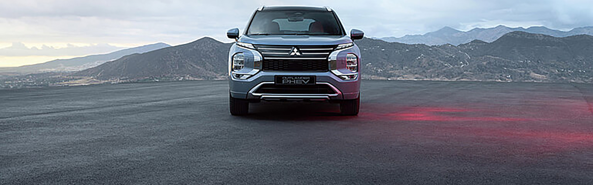

Verkauf
Neu- und Gebrauchtwagen
Neu- und Gebrauchtwagen, Mietwagen und Dienstleistungen rund um Ihr Fahrzeug.
Fahrzeuge entdecken ↘Auswahl an Neu- und Gebrauchtwagen
Neu- und Gebrauchtwagen
Mobilität für Ihre Pläne
Service am Standort Trimbach

Einschlagweg 36
4632 Trimbach
Garage Grossfeld AG
Trimbach SO
062 293 09 09